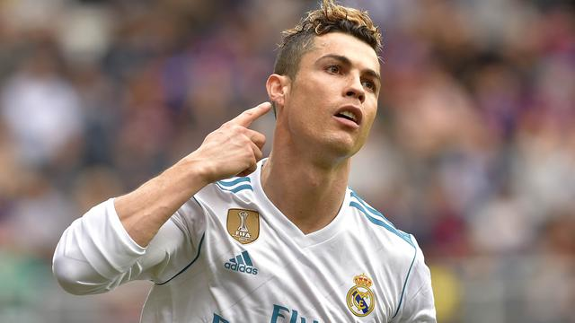

Cristiano Ronaldo
Cristiano Ronaldo merupakan seorang pemain sepak bola yang hebat berasal dari Portugal. Ia dapat berposisi sebagai sayap kiri atau kanan serta penyerang tengah. Saat ini ia bermain untuk tim Spanyol, Real Madrid dan untuk tim nasional Portugal. Ia menjadi pemain andalan di Real Madrid sebelum bermain untuk Real Madrid, ia pernah bermain di Sporting Lisbon dan Manchester United.
Biodata Cristiano Ronaldo
Nama Lengkap : Cristiano Ronaldo dos Santos Aveiro
Tempat Lahir : Funchal, Madeira, Portugal
Tanggal Lahir : 5 Februari 1985
Agama : Katolik
Zodiac : Aquarius
Biografi Cristiano Ronaldo
Ronaldo lahir pada 5 Februari 1985 di Madeira, Portugal, anak dari Maria Dolores dos Santos Aveiro dan Jose Dinis Aveiro. Cristiano merupakan anak bungsu dari 4 bersaudara. Dia memiliki kakak laki-laki bernama Hugo, dan dua kakak perempuan, Elma dan Liliana Catia. Liliana Bekerja sebagai penyanyi dengan nama panggung "Ronalda" di Portugal. Keluarganya penganut Katolik taat dan hidup dalam kemiskinan. Pada usia 14, Ronaldo setuju dengan ibunya untuk fokus sepenuhnya pada sepak bola.
Pada usia 8 tahun dimana ia bergabung dengan klub Andorinha selama 2 tahun (1993-1995) lalu pindah ke Nacional de Madeira (1995-1997), dan Sporting Lisbon (2001-2003) pada masa junior.
Ronaldo mengawali karir sepak bolanya dengan bermain untuk tim Sporting Lisbon pada (2001-2003) dengan memakai nomor punggung 28. Ia bermain 25 kali dan mencetak 3 gol. Pada pertengahan musim panas 2003, Sporting Lisbon mengadakan pertandingan persahabatan melawan Manchester United dengan skor akhir Sporting 3-1 M.U, sebuah kekalahan yang mengejutkan bagi sebuah klub raksasa Inggris sekaliber Manchester United. Lebih jauh lagi kemenangan ini semua didalangi oleh permainan cemerlang dari Cristiano Ronaldo muda dari Sporting, membuat para pemain Manchester United mendesak Sir Alex Ferguson, pelatih mereka, untuk segera merekrut pemain muda brilian tersebut.
Manchester United
Akhirnya Ronaldo didatangkan dari Sporting Lisbon ke Manchester United. Sir Alex Ferguson bertanya pada Ronaldo angka berapa nomor punggung yang diharapkannya. Cristiano Ronaldo menjawab 28, karena itu adalah nomor yang ia pakai di tim Sporting Lisbon dan juga itu merupakan nomor favoritnya. Namun, Sir Alex Ferguson malah berkata tidak, mulai sekarang nomor punggungnya adalah 7.
Sejak bergabung di Manchester United, Ronaldo mengalami transformasi tubuh yang signifikan, dari seorang pemuda kurus dibentuk untuk ukuran orang dewasa yang atletis. Tegap, tipe tubuh berotot memungkinkan dia untuk menjaga keseimbangan ketika membawa bola.
Ronaldo pun membuktikan kualitas yang dimilikinya. Menggunakan nomor punggung tujuh, yang selama ini dikenal sebagai nomor keramat di Manchester United, Ronaldo sukses menjelma menjadi salah satu pemain andalan Manchester United. Peraih gelar Balon d'Or 2008 itu mempersembahkan tiga titel Liga Primer, sebiji gelar Piala FA, dan sebuah gelar Liga Champions 2008. Ia bermain 196 kali dan mencetak 84 gol.
Real Madrid
Namun, kiprah Ronaldo di Old Trafford berakhir setelah 7 tahun membela Manchester United mengejutkan Pada 1 Juli 2009, ia pindah ke Real Madrid dengan memecahkan rekor transfer sebesar 80 juta poundsterling atau sekitar Rp 1,3 Triliun, yang menjadikannya sebagai pemain termahal dalam sejarah sepak bola.
Saat diperkenalkan oleh Florentino Perez sebagai pemain baru El Real, sekitar 80.000 penggemar memenuhi markas Real Madrid, Santiago Bernabeu. Ronaldo juga adalah pemain pertama yang berhasil mencetak 40 gol dalam satu musim La Liga, mengalahkan rekor sebelumnya 38 gol dan berada di urutan ke 4 dalam 10 pencetak gol terbanyak Real Madrid dengan total 252 gol (terhitung 24 Mei 2014) dimana posisi nomer 1 dihuni oleh Raul Gonzales dengan koleksi 323 gol.
Ronaldo telah bermain untuk tim nasional Portugal, yaitu U-17, U-20, U-21, dan U-23. Ia mulai dipanggil ke tim nasional Portugal sejak tahun 2003. Ia telah bermain setidaknya 118 kali untuk tim nasional senior, dan mencetak 52 gol. Ia termasuk dalam skuat Portugal pada Piala Eropa 2004, Olimpiade Athena 2004, Piala Dunia 2006, Piala Eropa 2008, dan Piala Dunia 2010,dan Piala Eropa 2012 dan Piala Dunia 2014.
Pada tanggal 17 Oktober 2012, Ronaldo mencapai penampilan ke-100 untuk tim nasional Portugal di kualifikasi Piala Dunia melawan Irlandia Utara di Porto Estadio do Dragao. Ia menjadi pemain termuda ketiga Eropa yang pernah mencapai angka tersebut, setelah pemain Jerman Lukas Podolski dan pemain Estonia Kristen Viikmae.
Sebagai salah satu dari dua pemain terbaik di dunia dan sebagai salah satu pemain terbaik yang pernah bermain selain Lionel Messi, Cristiano Ronaldo memainkan peran menyerang, paling sering bermain baik sebagai striker atau sebagai pemain sayap, dan dikenal karena finishing, kecepatan, dribbling, positioning, passing dan kemampuan crossing. Ia mampu bermain di kedua sayap juga ditengah, membuatnya menjadi penyerang yang sangat serbaguna.
Ronaldo pernah menyatakan keinginannya untuk mengukir namanya dalam sejarah bersama legenda sepakbola seperti Pele dan Diego Maradona, dan bahwa ia akan lebih dikenang sebagai model peran dari salah satu pemain terbaik sepak bola dunia.